Spermulator 3D-Remake Final Report
Team 7
Abstract
In this project we turned Spermulator, a 2D game, into 3D. This involved turning all assets into 3D, adapting camera views, and developing new textures that would accurately represent light reflection. Our starting point was a 2D rendering pipeline in Unity with basic game function code and minimal if no shading. Only one of us had Unity experience at all, and only with a 2D pipeline. Over the course of the project, we learned a lot about Unity's 3D rendering pipeline, including converting all the assets and camera system to 3D. Every shader we made was from scratch in Unity's shader graph or custom .shader files, with the aid of online YouTube tutorials. We custom made our uterus model mesh and bacteria mesh in Blender and imported them into Unity, where we brought all the parts together. The result is Spermulator: 3D!
|
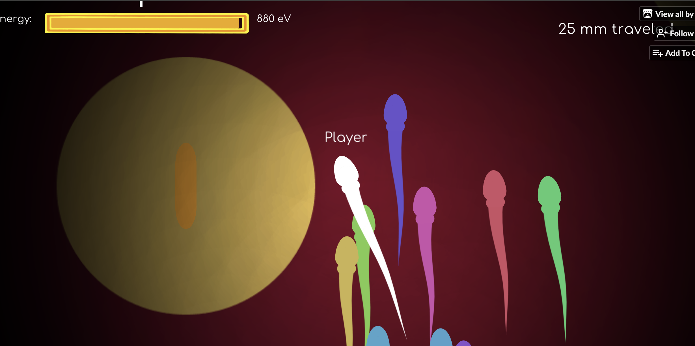
|
.gif)
|
Technical Approach
3D Asset Creation
To convert the original 2D Spermulator game into a 3D experience, we recreated all major assets in 3D, including the player sperm, bacteria cells, immune cells, and the uterus environment. We used a preexisting 3D sperm model and custom-modeled the uterus and bacteria in Blender, leveraging subdivision surface modeling for smoother organic geometry. Asset import and scaling were carefully adjusted to ensure consistency across the scene.
3D Freelook Movement and Camera System
Our control system was designed around four goals:
(1) Allow the player to look freely using the mouse,
(2) Move the player using WASD, relative to the camera,
(3) Rotate the sperm model to face its movement direction,
(4) Have the camera follow the player without feedback jitter.
To implement (1), we track pitch and yaw manually and directly rotate the player object based on mouse input. For (2), keyboard input is transformed from camera space to world space using the player’s rotation.
For (3), the sperm model (a child of the player GameObject) is rotated to face the movement direction without interfering with physics. We apply a fixed correction to account for the model’s default forward direction, then use Quaternion.Slerp for smooth interpolation.
For (4), we use Cinemachine’s ThirdPersonFollow to follow the player’s position. However, we disable Cinemachine’s PanTilt rotation module to avoid circular dependencies—PanTilt rotates the camera based on input, which would then affect player rotation and feed back into camera movement. By separating input-driven rotation (handled by the player) from camera follow behavior, we achieved stable and consistent controls.
Minimap
Based on TA suggestions in the proposal and milestone report, we decide to add a minimap to show the egg location and map layout. To do this, we used a secondary camera to render the scene from above. This camera was set to orthographic mode and positioned directly above the player. We then created a Render Texture in Unity and assigned it to the minimap camera. The minimap camera's output was displayed on a UI Raw Image component, allowing us to overlay it on the main game screen. To show the player's location, we transformed the player's position to the minimap's coordinate system and drew a small arrow representing the player, which points towards the player's direction.
Procedural Sperm Wiggle Shader
To simulate realistic swimming, we implemented a procedural GPU animation using Unity’s Shader Graph (URP). Rather than rigging a skeletal tail, we applied sinusoidal vertex displacement along the mesh.
The sperm model uses a custom coordinate system: local X = forward, Y = left, Z = down. In the shader, vertex Y and Z positions are displaced using sine and cosine functions of the form:
Y += sin(X * frequency + time * speed) * amplitude
Z += cos(X * frequency + time * speed) * amplitude
This results in a helical tail motion, mimicking 3D swimming behavior. To keep the head stable while animating the tail, we attenuate the amplitude linearly based on X position:
attenuation = 1 - saturate(X / maxX)
All displacement occurs in object space to ensure consistent behavior regardless of prefab scale. Our sperm prefab used a non-uniform scale (0.4, 0.4, 1), which required careful handling to avoid distortion.
Sperm Glow Shader
The sperm's glow shader was built on top of its existing shader graph from movement. We added two parameters
to the shader graph, Color and GlowAmt, to control the color of the sperm and the intensity of its glow respectively.
Color also controls the emission of the sperm, and by extension the color of its glow. Next, we added a
Bloom effect to the scenes where we wanted the sperm to glow and adjusted the parameters such that pixels
above the threshold brightness would glow with the desired intensity. Finally, to allow the camera to see the post-processing effects, we enabled
post-processing under the camera object's options.
Custom Shading for the Game Map, Egg, Bacteria
The shading for the bacteria mucus uses translucency and emissions to simulate the mucus’s semi-transparent appearance. The shader uses a lerp and scrolling speed to make the emission seem translucent as well.
We compute two scrolling offsets: o1(t) = (t * scrolling_speed), o2(t) = 1 - o1(t) Them we build two tiled offset UV’s from a texture of an electrical current to get two currents rolling against each other:
U1 =T(u∘k+(o1(t),o1(t)))
U2 =T(u∘k+(o2(t),o2(t)))
And then lerp them over the current screen color to get the emission:
Emission = Lerp(S(u), U1 + U2, 0.5)
Where S(u) is the screen color pixel. This gives us the final shader! We use a base color, and then emit over it to create the effect. This implementation differed from the tutorial because we only really needed the emission effect. Additional, for this shader we chose have an input color so that it was user adjustable.
The Game Map uses a combination of displacement mapping and simulated sub surface shading to mimic real flesh.
Displacement mapping:
We sample height from a height map and then add it to the current vertex position of the object to get our displacement mapping. The math for the new positions looks as follows:
position = sample(height_map) * intensity * N + position
Where N is the object normal, intensity is a user modified scalar, and position is the object vertex position. Example of displaced material:
We differed from the regular vertex displacement tutorials by displacing by a sample from an height map. This was tricky because Unity expects vertex position in Object space, and the height map is in World space. We had to convert the height map position to Object space before sampling it, and then convert the sampled value back to World space before adding it to the vertex position. We also differed from the reference by using an ambient occlusion map to make grooves seem deeper without having to edit our height map, as a common issue we ran into was that the values from our sampled height map were too low. This meant that to make the bumps seem more apparent, we would accidently make objects much to big, so the ambient occlusion map helped solve that.
Finally, we need some way for the uterus walls to have that same see-through effect real flesh does, such as when you hold a flashlight against your hand. This wasn’t fully possible in URP (only supported by HDRP), but we simulated it using emissions. Unity doesn’t ship with a function to calculate attenuation and direction from lights other than the main one, so we followed a tutorial and customized the script for our needs. The material emission is such:
Emission = intensity * shineThroughColor * pointlight_attenuation(world_position)
We additionally clamped the emission values to ensure the transition between base and emission color are not too harsh.
|
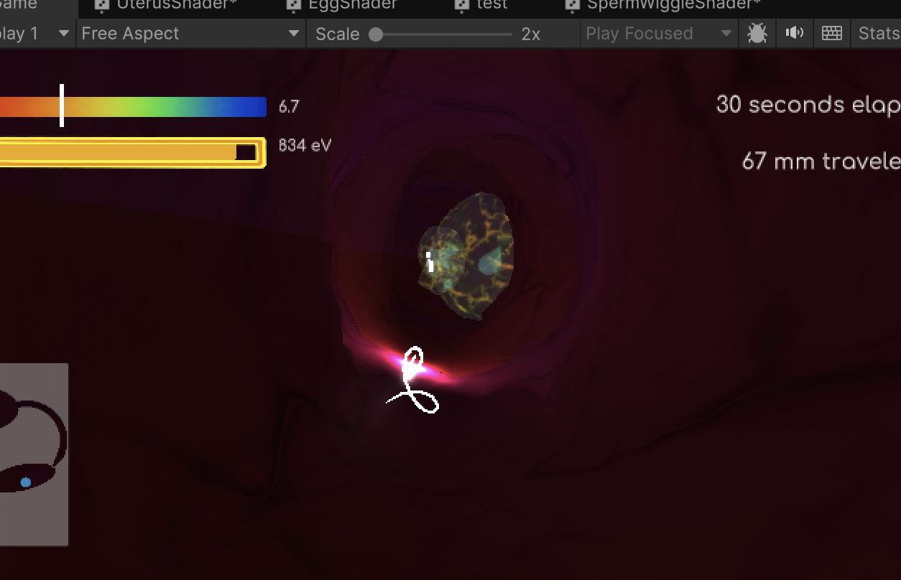
|
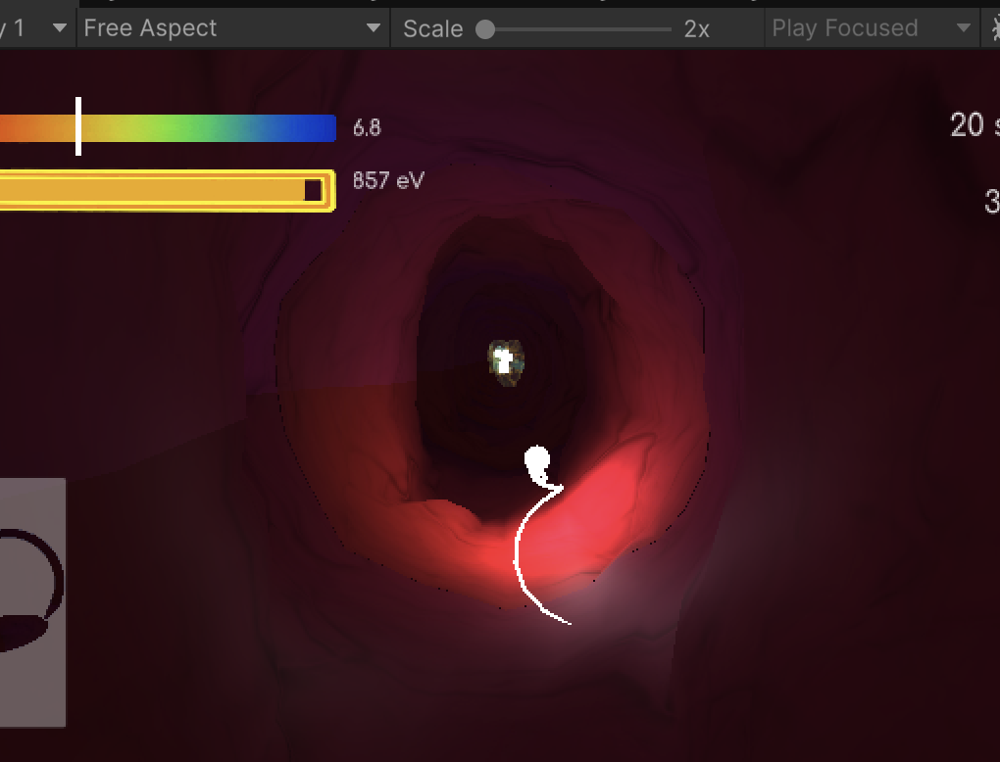
|
Geometric Modeling
To construct the map environment of the 3D Spermulator game, we used Blender to model organic structures such as the vagina and uterus. The modeling process began with basic primitive meshes including cylinders, spheres, and cones which served as foundational shapes for the overall structure. We reshaped these primitives using Bezier curves to guide the organic flow of the forms, especially for the connection between the uterus and the ovaries. This allowed us to define smooth, natural contours with fine control over curvature to allow for a circular bend. To further refine and deform the geometry, we employed lattice modifiers, which enabled the smooth manipulation of grouped vertices without distorting the overall mesh structure. This was particularly useful for creating the subtle ridges and inner folds characteristic of the vaginal lining as seen in the pictures of the game. A key technique used to enhance control over the model's shape was the application of Catmull-Clark subdivision surfaces. This subdivision method increased the number of faces and edges across the mesh, allowing for greater detail and smoother curvature during sculpting such as for the vaginal canal ridges and bumps. It also gave us finer control over subtle deformations that allow us to transfer over for real-time rendering in Unity. Throughout the modeling process, we maintained a focus on structural integrity and scaling. We ensured proper mesh orientation, removed stray or excessive vertices, and corrected flipped normals to prevent lighting and collision issues in Unity.

|

|
|
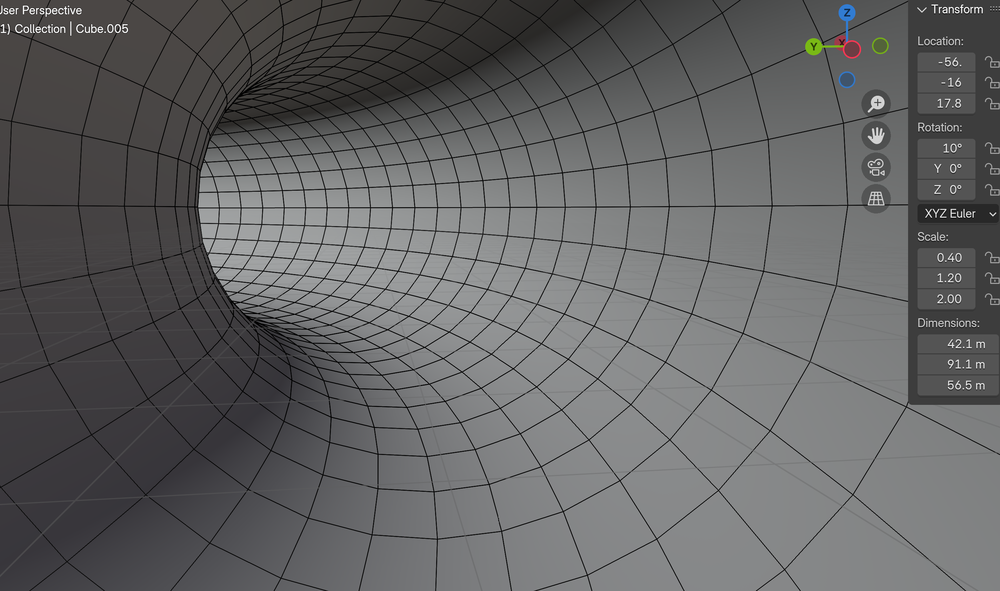
|
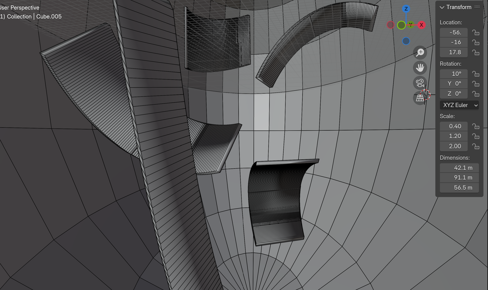
|
Problems Encountered and Solutions
-
Transparency Artifacts: Acid spheres appeared opaque despite having alpha = 0, or failed to render objects behind them.
→ Fixed by replacing the Shader Graph material with a standard Unlit Transparent shader, avoiding issues with URP depth sorting. -
Player Not Spawning Post-Tutorial: The player model failed to appear after the tutorial scene.
→ Resolved by verifying scene transitions and player instantiation code. -
Uterus Wall Mesh Bugs: Certain areas of the uterus had flipped normals or missing backfaces, allowing the player to escape the map.
→ Addressed in Blender by fixing normals and ensuring the material supports two-sided rendering if necessary. Also removed absurdly far away vertices from the main model to ensure correct mesh collider calculation. -
Sperm Color Mismatch: Selected sperm colors didn’t persist between scenes and appeared blue-tinged.
→ Persistence was fixed by extending the color handler script. The blue tint was due to color blending in the shader; switching to a white-base texture fixed the final output. -
Camera Instability: Initial use of Cinemachine's
PanTiltmodule led to jittery, recursive control issues.
→ Solved by shifting all input-driven rotation logic to the player and using the camera purely for passive following. -
Unity Rendering: Lighting did not render in game, unable to debug shaders due to lack of visual feedback
→ Changed URP asset to use URP 3D pipeline instead of 2D, updated graphics settings and shaders.
Lessons Learned
- Shader Design Requires Precision: Understanding object vs world space and non-uniform scaling was crucial for reliable procedural animation.
- Camera Logic Must Be Decoupled: Avoiding feedback loops in Cinemachine systems helped create a more polished feel.
- Model Orientation Matters: Misaligned import orientations necessitate correction both in logic and shaders; knowing your coordinate system is vital.
- Testing in Isolation Pays Off: Simple test scenes—such as a box room for camera testing or stacked transparent spheres—helped isolate and resolve visual issues.
- Visual Debugging Tools Are Invaluable: Shader Graph previews, gizmos, and inspector probes were instrumental in debugging visual artifacts.
- Cross-Disciplinary Collaboration: Effective teamwork across modeling, scripting, and shading improved productivity and final polish.
Results
The game is now hosted on itch.io, playable directly from the browser on any laptop. Go to this link to play the game: https://circlecly.itch.io/spermulator-3d-remakeBelow, we also provide side-by-side comparisons of 2D and 3D Spermulator.
|
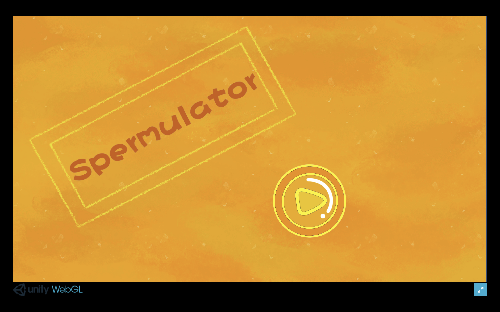
|
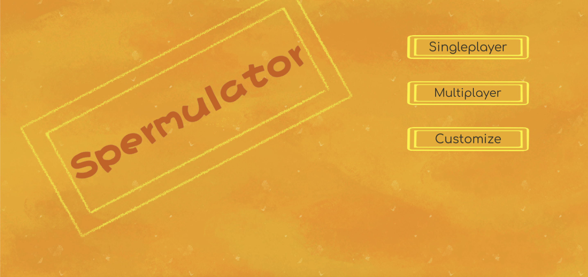
|
|
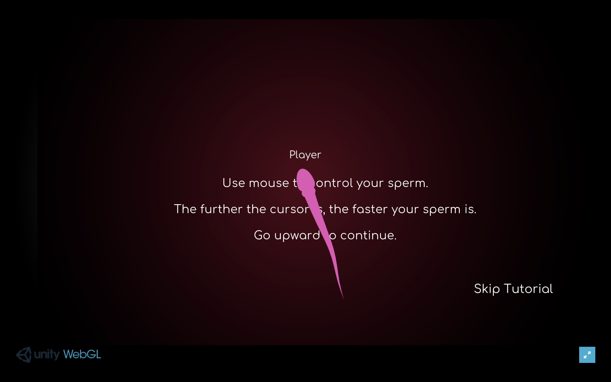
|
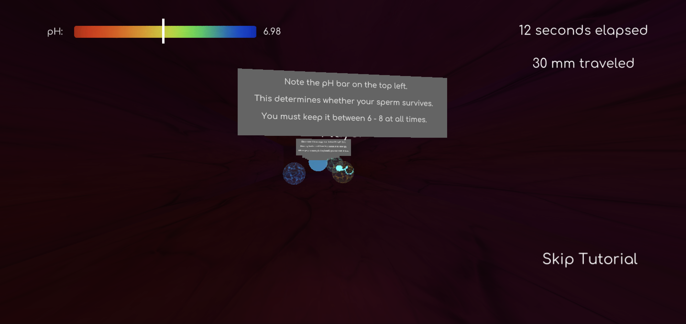
|
|
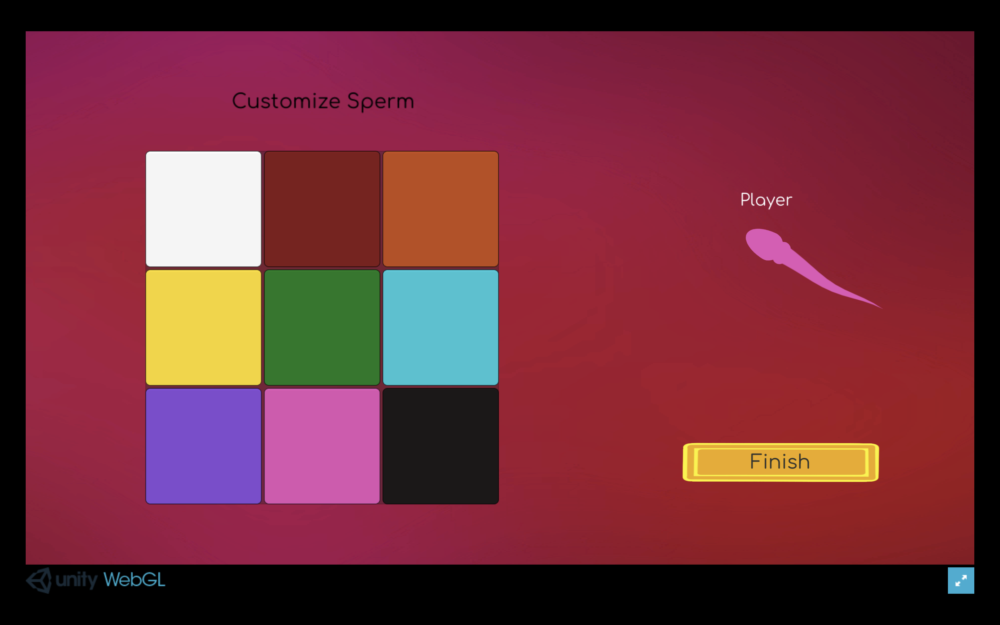
|
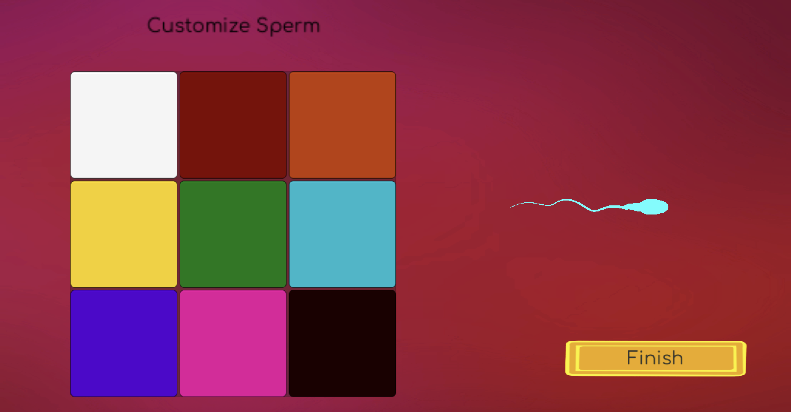
|
|
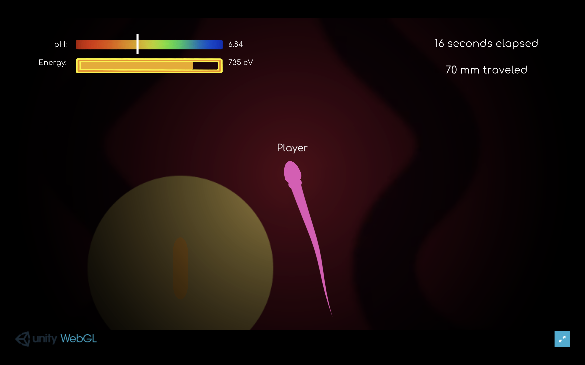
|
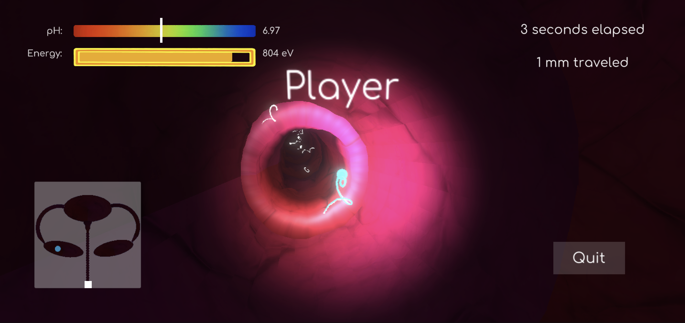
|
|
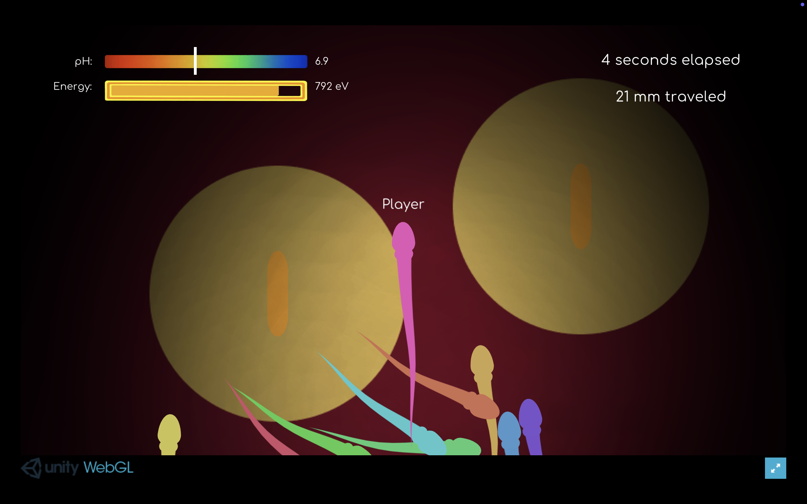
|
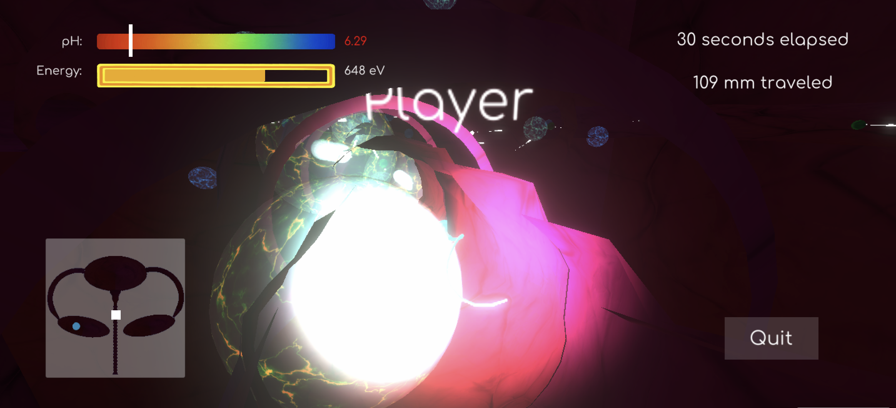
|
|
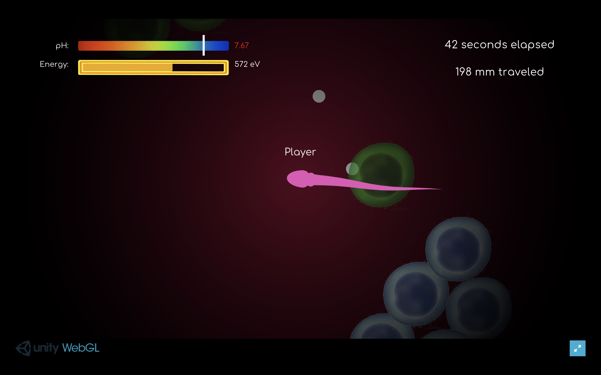
|
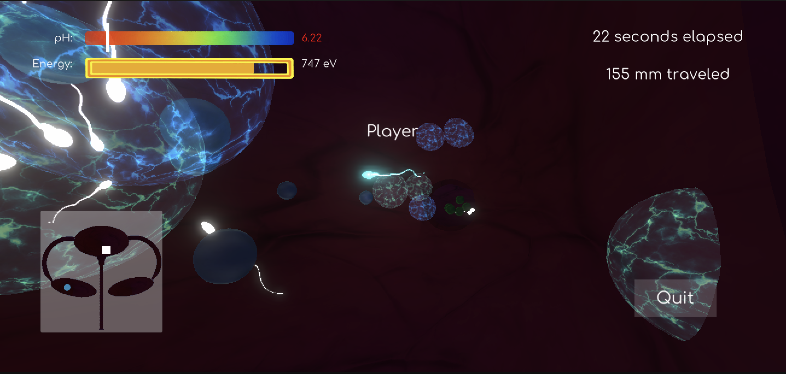
|
|
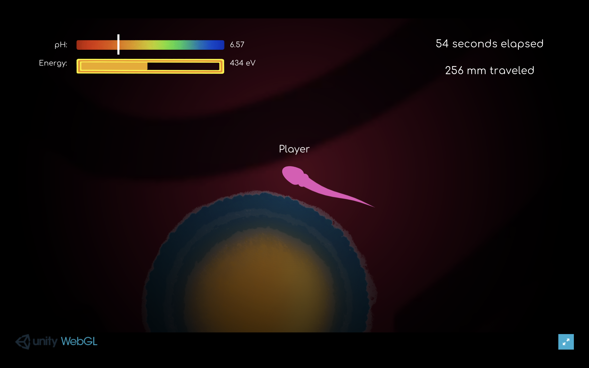
|
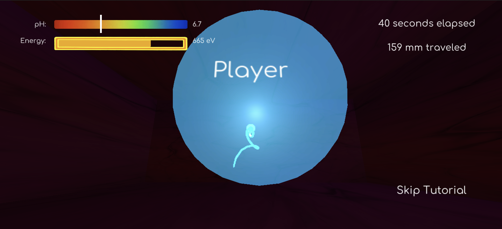
|
References
- Unity Documentation (URP, setting up shader graphs, Modifying Material Colors)
- URP HDR Glow - Unity Shader Graph (MichaelsGameLab, YouTube)
- Make Object Transparent in Unity 2022 (Dev Dunk, YouTube)
- Fast Subsurface scattering shader in Unity URP for mobile
- Magical Plasma Orb Part 1 Tutorial
- Texture Pack for Flesh
Contributions
Circle Chen, Sanika Bharvirkar, Ashely Kao, Grant Zhou